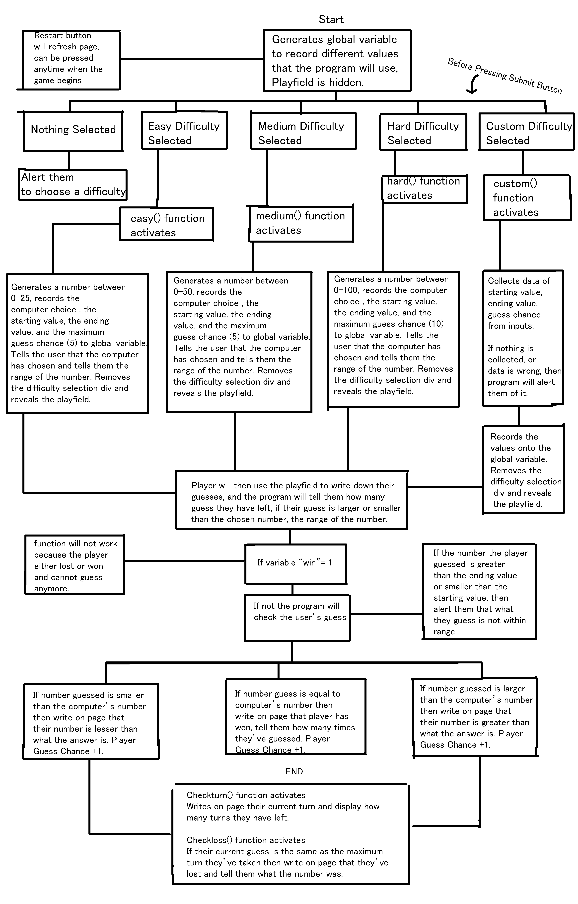
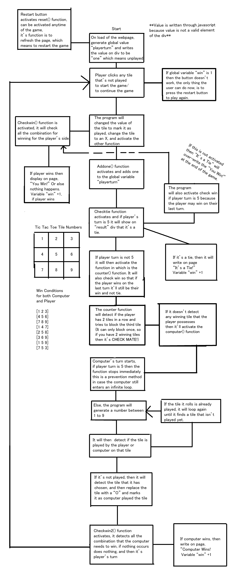

Home Page | Project 1 - Guess a Number! | Project 2 - Flip a Coin! | Project 3 - Tic Tac Toe! | Reflection
Introduction
This website is about mini games of which most of us has played when we were young, or you may also be new to these games! The target audience for this website are anyone who is above the age of 10, this is because I want to make sure that the user are able to understand the instruction of the website so they can enjoy the game to their fullest. Furthermore, this website is about games and usually younger people are more interested in games compared to older people. The goal of this website is to create 3 simple, playable and popular game digitally with javascript, html and css. I expect myself to complete the project within a week because I know I am a fast worker and I always do my work the day I recieve them, so the expected goal I set for myself is to complete the project within a week.
Proposals
Project #1 - Guess The Number!
Click Image to Open New Tab!
The main concept for this project is to have the user choose the difficulty of the game through radio buttons or input their own custom difficulty by inputting their own starting value and ending value of the guessing range, other than that
I wanted to make it so that it's really user friendly and that the program will notify the user whenever something is wrong with their inputs so the computer will always alert the user whenever things such as "none of the difficulties are selected", and
"wrong values inputted for custom difficulty". After that I wanted the program to show the play area where the player will guess the number that the computer has chosen after the game starts so I decieded to hide the play area before the game and make it
show after they click the "submit" button on the html. Furthermore, for the game itself, I want to make it easy and challenging for the player so I made them guess for a certain amount of time and made the computer give hints to the player when their
number is either larger or smaller than the number that the computer has chosen. Finally, the game will tell the player either they have lost (from using up all their guesses) or if they have won and the player can restart the game by pressing the restart button.
After a winner or loser is announced, everything except for the restart button will be unable to use and the restart button is there for the user to replay to the game.
(For further information on how the game works and flows, please check out the image above.)
Project #2 - Flip the Coin!

Click Image to Open in New Tab!
For this project I've decided to go with the direction where the game is direct and really easy to understand on what to do, so I wanted the only thing that could be interacted to be the buttons for which buttons they would choose to be on
and the button where the coin will be flipped. Other than that, the computer will control the rest of the game and the user will only concern about which side they have chosen. For every error of input that the user have, wins or losses the
website will alert the user that there's an error of input in the website. I wanted the the user or the computer to win on the score of 10 so if either the computer or player gets the score of 10 the website would announce their victory and
then everything on the webpage will stop working, so the only thing that the user can do is to click the restart button if they want to play the game again.
(For further information on how the game works and flows, please check out the image above.)
Project #3 - Tic Tac Toe!
Click Image to Open in New Tab!
The main concept for this project is to create a playable tic tac toe with the application of AI, which basically means that the artificial intelligence will do things it can to prevent you from winning,
but if it doesn't detect you winning then it'll pic a random tile to fill. The computer will also detect all of the winning conditions for a tic tac toe game so if either the computer or the player are able to get the
combinations for winning (which is to connect 3 tiles together), then they win, or else if all the tile is filled but no one wins then it's a tie.
After a winner or tie occurs, the program will stop functioning so that the user will be unable to make anymore inputs to the playfield and the only thing the user can do
is to click the restart button which will restart the game so that they could replay again.
(For further information on how the game works and flows, please check out the image above.)